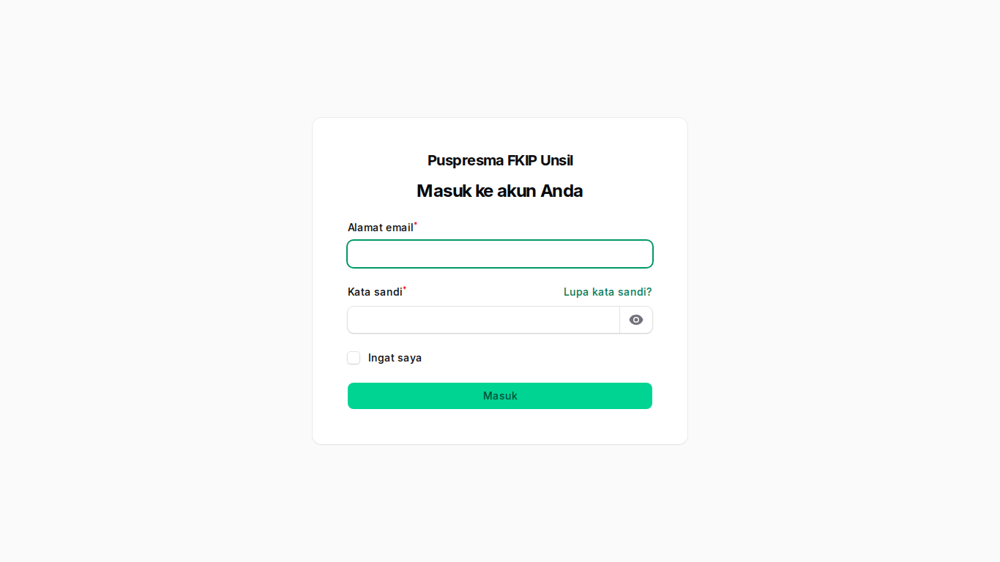
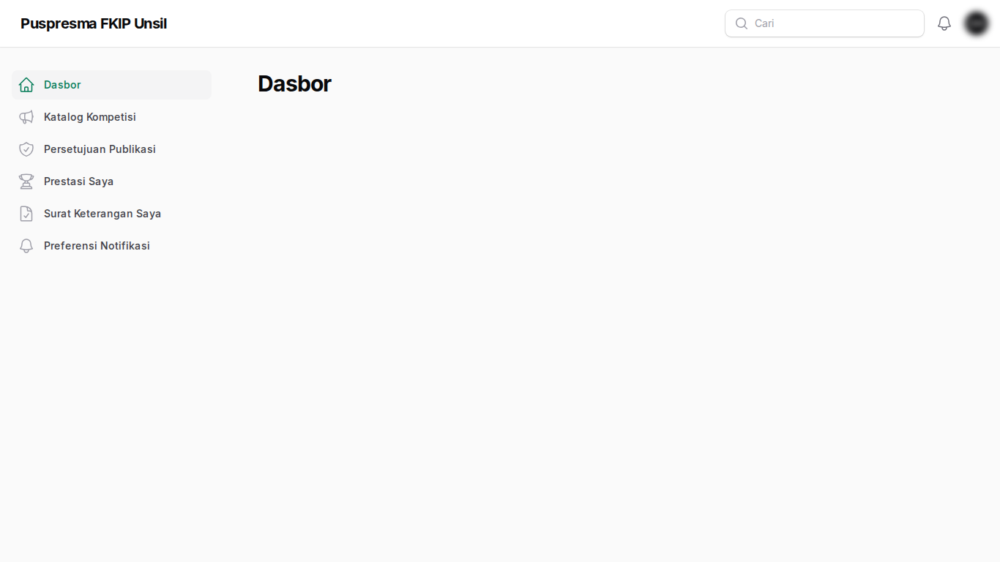
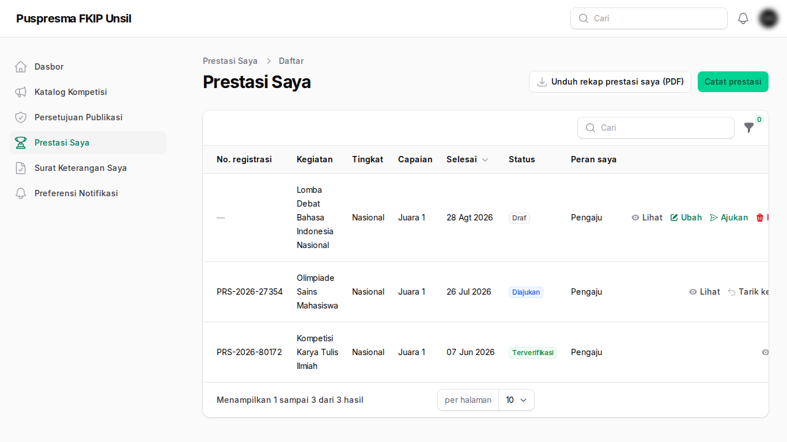
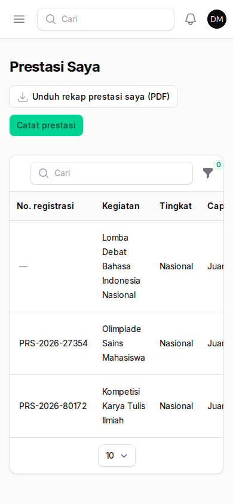
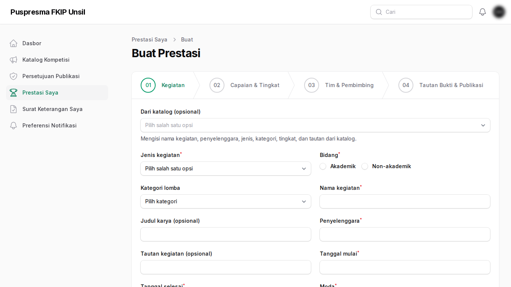
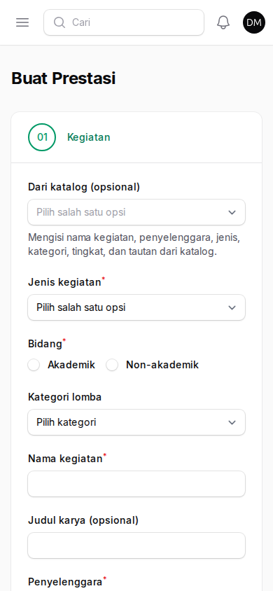
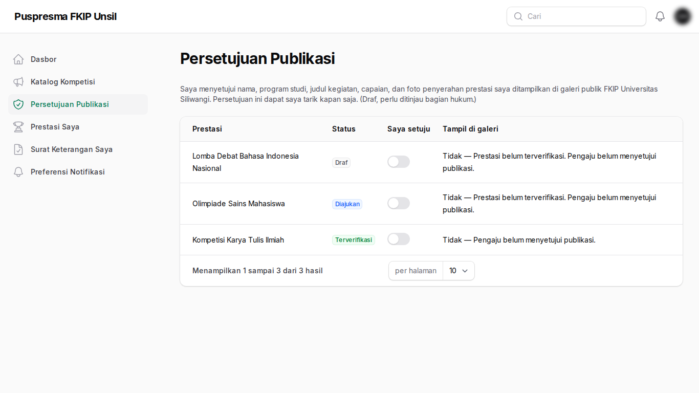
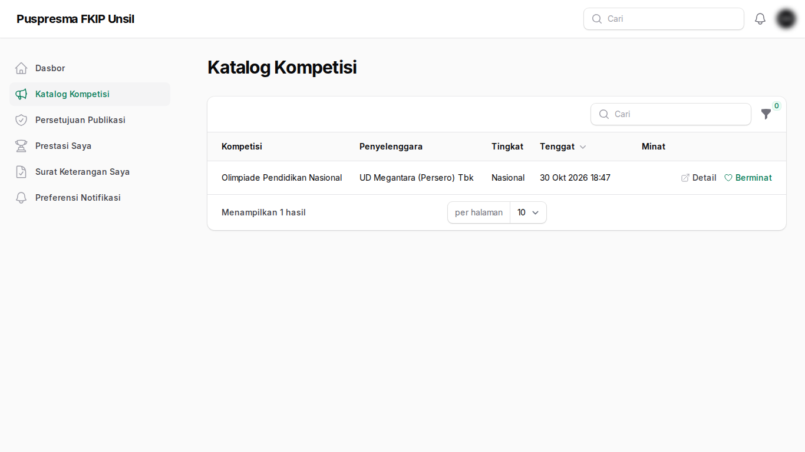
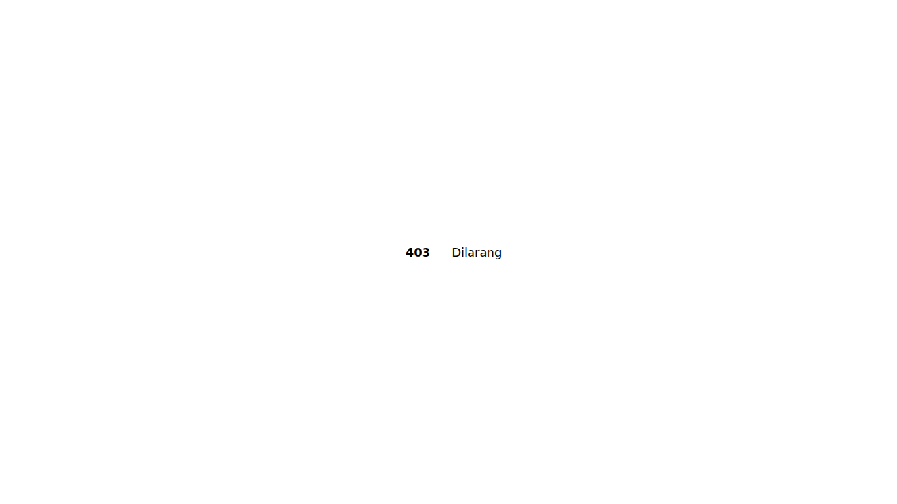
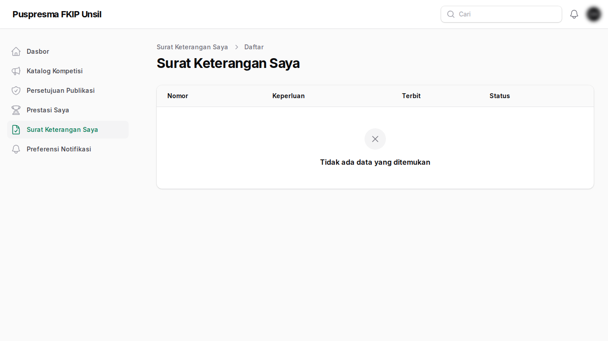

Panduan Mahasiswa
Tujuan
Mencatat prestasi akademik dan non-akademik Anda (individu atau tim lintas prodi) sebagai bukti akreditasi dan seleksi beasiswa. Bukti berupa tautan Google Drive; tidak ada unggah berkas ke sistem.
Cara masuk
Buka halaman Portal, masukkan email kampus dan kata sandi (atau tombol Google bila tersedia, hanya akun domain kampus). Akun dibuat admin; tidak ada pendaftaran mandiri.
Langkah-langkah
- Halaman masuk. Masuk dengan email kampus dan kata sandi. Akun dibuat admin; tidak ada pendaftaran mandiri.

Halaman masuk - Beranda portal. Ringkasan prestasi Anda dan menu di sisi kiri.

Beranda portal - Daftar Prestasi Saya. Semua prestasi beserta statusnya: draf, diajukan, perlu perbaikan, terverifikasi, atau ditolak.

Daftar Prestasi Saya 
Tampilan di ponsel - Formulir prestasi. Isi data kegiatan, anggota tim, dan tautan bukti Google Drive (bukan unggah berkas). Simpan sebagai draf lalu ajukan.

Formulir prestasi 
Tampilan di ponsel - Persetujuan publikasi. Setujui atau tarik persetujuan agar prestasi terverifikasi tampil di galeri publik.

Persetujuan publikasi - Katalog kompetisi. Cari lomba dan tandai minat untuk pengingat tenggat.

Katalog kompetisi - Poin saya. Poin dari prestasi terverifikasi (bila fitur poin aktif).

Poin saya - Surat keterangan. Ajukan Surat Keterangan Prestasi ber-QR untuk prestasi terverifikasi.

Surat keterangan
Tanya-jawab
- Tautan saya ditolak sistem.
- Pastikan tautan https, mengarah ke berkas Drive (bukan folder), dan bukan tautan pendek.
- Bagaimana berbagi sertifikat?
- Sertifikat dan foto boleh publik dengan tautan. Dokumen ber-NIK/NIP/nilai dibagikan terbatas ke akun kampus.
- Prestasi saya ditandai duplikat.
- Admin akan meninjau; Anda tidak perlu mengajukan ulang.